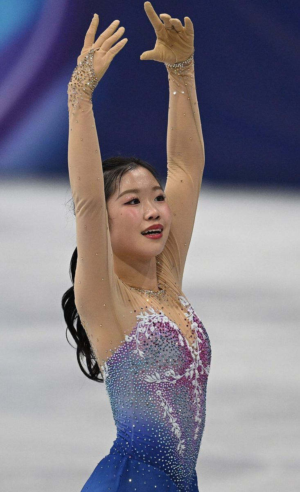

Ignatova, Formerly Trusova, Takes a Second Grand Prix Silver and Closes In on the Final in China
The 2022 Olympic silver medallist finished second at Skate America a week after second place at the Cup of China, and is second in the standings with two events left.

What happened
Alexandra Ignatova, who competed as Alexandra Trusova until her marriage in 2024, won silver at Skate America in Everett, Washington, on the weekend. It was her second Grand Prix silver medal in a row, a week after she finished second at the Cup of China in Shenzhen.
In Everett she scored 213.90 points: 74.24 in the short program, the second-best score, and 139.66 in the free skate, the third-best. Ami Nakai of Japan won with 236.81 after placing first in both programs, NBC Sports reported. Rino Matsuike of Japan took bronze with 211.63, 2.27 points behind Ignatova, according to the official ISU results.

The comeback so far
Ignatova, 22, won Olympic silver in 2022 and World Championship bronze in 2021. She was the first woman to land a quadruple Lutz in international competition. She married fellow figure skater Makar Ignatov in August 2024, and their son Mikhail was born in August 2025.
She returned to Eteri Tutberidze's group in January 2026. The ISU approved her to compete as an Individual Neutral Athlete on 30 June 2026. In September she made her international return with second place at a Challenger event in Japan, and in October she won the Denis Ten Memorial Challenge in Kazakhstan.
At the Cup of China from 6 to 8 November, she scored 221.27 points and finished 3.21 behind Mone Chiba of Japan. Her free skate, which included a quadruple Lutz, was the highest-scoring of the event. NBC Sports reported that she became the first mother to reach the podium of a Grand Prix singles event.

Why it matters
The two silver medals give Ignatova 26 points in the Grand Prix standings. That puts her second behind Nakai, who has 30. The top six skaters in each discipline after the six regular-season events qualify for the Grand Prix Final, which takes place in Chongqing, China, in December.
What happens next
Two regular-season events remain: the Finlandia Trophy in Helsinki from 20 to 22 November and the NHK Trophy in Tokyo from 27 to 29 November. Skaters who have only one event so far can still collect points there, so the final list of six will be known after Tokyo.